Game Design Document
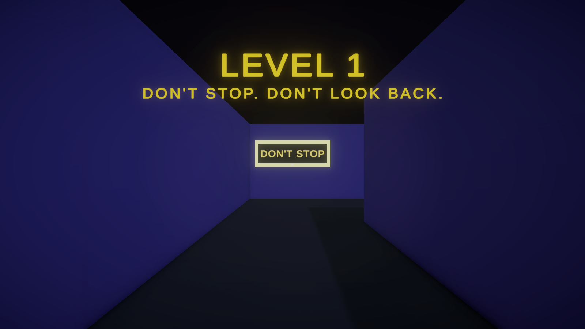
Adel Nabih, Maryam Sherif, Ali Eissa
Game Design, Dr. Arafa Taher
October 2026
GitHub: https://github.com/adel-nabih/SprintOrShift
Sprint or Shift is a first-person maze game made in Unity 6. You are in a dark neon maze and you have to reach a glowing portal at the end. The catch is that if you stand still for two seconds you get sent back to the start, and some of the walls move when you are not looking at them. So you can't stop to think and you can't go back the way you came.
The question we wanted to answer with the prototype was whether two simple rules, "don't stop" and "don't look back", are enough to make a normal maze feel tense and make players commit to their choices.
| Genre | First-person maze / action puzzle |
|---|---|
| Platform | PC with keyboard and mouse (we built it for macOS) |
| Engine | Unity 6 with the Universal Render Pipeline |
| Play time | About 3 to 8 minutes for both levels |
| Target players | Ages 12 and up, casual and regular players |
We kept a few goals in mind while making decisions:
In terms of how the player should feel, we wanted them to panic a little when they stop, to be nervous about turning around, and eventually to realise that standing still can also be used on purpose to get out of a dead end.
If the player moves slower than 0.1 m/s for 2 seconds, they are teleported back to the start. A red overlay with a countdown starts fading in after about 0.3 seconds as a warning. The timer only starts after the first step, so the player can look around at the start without being punished.
The purple walls only change after the player has seen them (on screen with nothing blocking the view) and then turned so they are behind them (more than 110 degrees away from where they are looking). There are two kinds: one-way gates close after you walk through them, and toggle walls switch between open and closed each time.
Some paths lead into dead ends on purpose. If you get stuck, you can stand still for 2 seconds to go back to the start, and all the purple walls go back to how they were, so the level can always be finished.
Walking into the cyan portal finishes the level. Level 1 leads to Level 2, and finishing Level 2 shows the victory screen, where R restarts the game.
| Key | Action |
|---|---|
| W A S D or arrow keys | Move (up to 6.5 m/s) |
| Mouse | Look around |
| Esc | Release the mouse |
| Left click | Capture the mouse again |
| R | Restart (on the victory screen) |
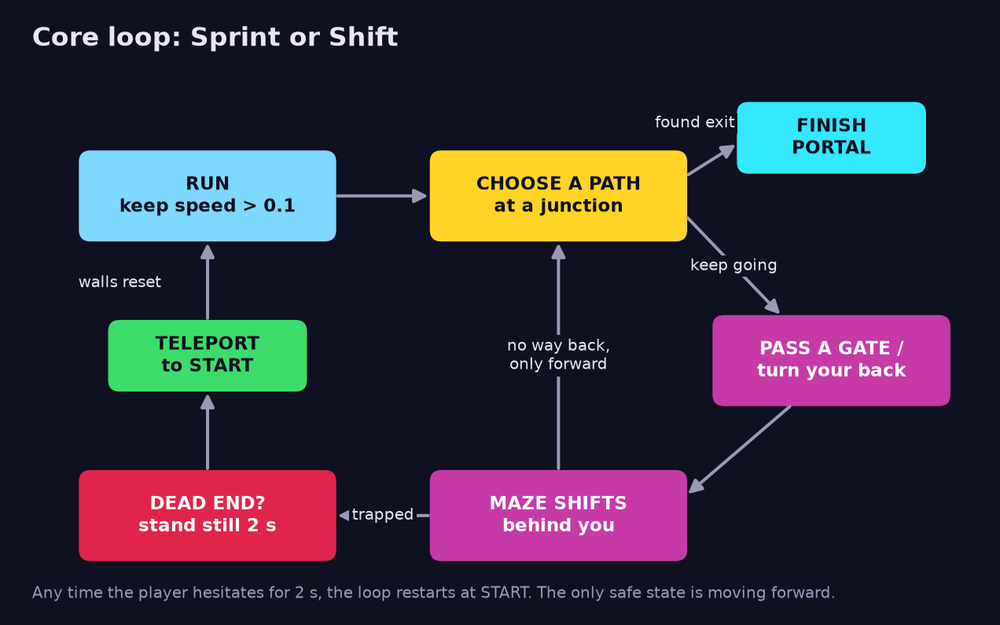
Moment to moment, the player is running and picking directions at junctions with the two-second limit always in the background. Over a few minutes, every reset costs time but teaches them a bit more of the maze and where the traps are. Across the whole game, Level 1 introduces each rule separately and Level 2 puts them all together with faster walls.
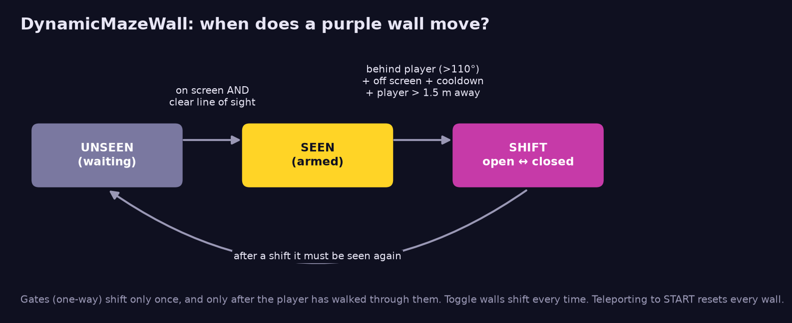
To count as seen, a wall has to be inside the camera view and there has to be a clear line from the camera to the wall. This means walls hidden behind other walls don't count.
| Wall type | Starts | Moves when | Why we added it |
|---|---|---|---|
| One-way gate | Open | The player has seen it, walked at least 3 m past it, and it is now behind them. Only happens once. | Stops the player going back, so a wrong choice becomes a dead end. |
| Toggle wall | Open | The player has seen it and it is now behind them. Happens every time, with a 2 second cooldown in Level 1 and 0.6 seconds in Level 2. | Changes the routes by opening shortcuts or closing off areas. |
A wall will never move if the player is within 1.5 m of it, so it can't close on top of them. All walls reset when the player is teleported.
| Setting | Value | Reason |
|---|---|---|
| Time limit | 2 seconds | Enough time to turn a corner and read a sign, but not enough to stop and study the maze. |
| Speed threshold | 0.1 m/s | It uses the player's real speed, so walking into a wall counts as standing still. This is what makes Rule 3 work. |
| Warning overlay | 0.3 s to 1.2 s | Short pauses don't trigger it, but it is very obvious before the teleport happens. |
Both levels are made of 4 m grid cells. We wrote the layouts as text in the level builder script (SprintOrShiftLevelBuilder.cs), so changing the maze is just a case of editing characters. We also checked both layouts with a small search program to make sure the exit can be reached even if every toggle wall is closed.
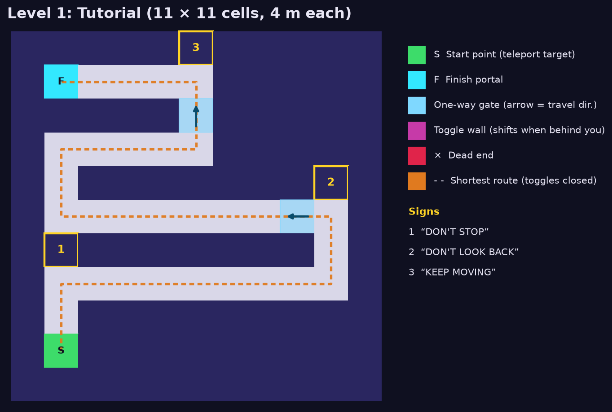
Level 1 is one long winding corridor (33 cells to the end) with two one-way gates and three signs. There are no branches, so the player can learn the rules without getting lost. The first thing they see is the "DON'T STOP" sign. "DON'T LOOK BACK" is just before the first gate, which closes behind them a few seconds later, and "KEEP MOVING" comes before the second gate and the portal.
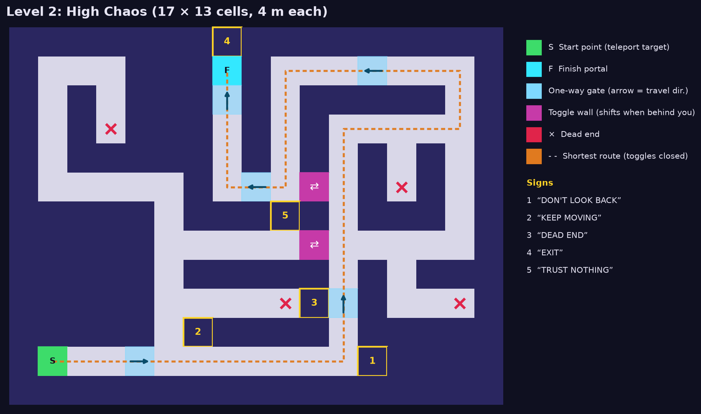
Level 2 is 17 by 13 cells with a shortest route of 41 cells. It has five one-way gates, two fast toggle walls and four dead ends. A few parts were designed to trick the player:
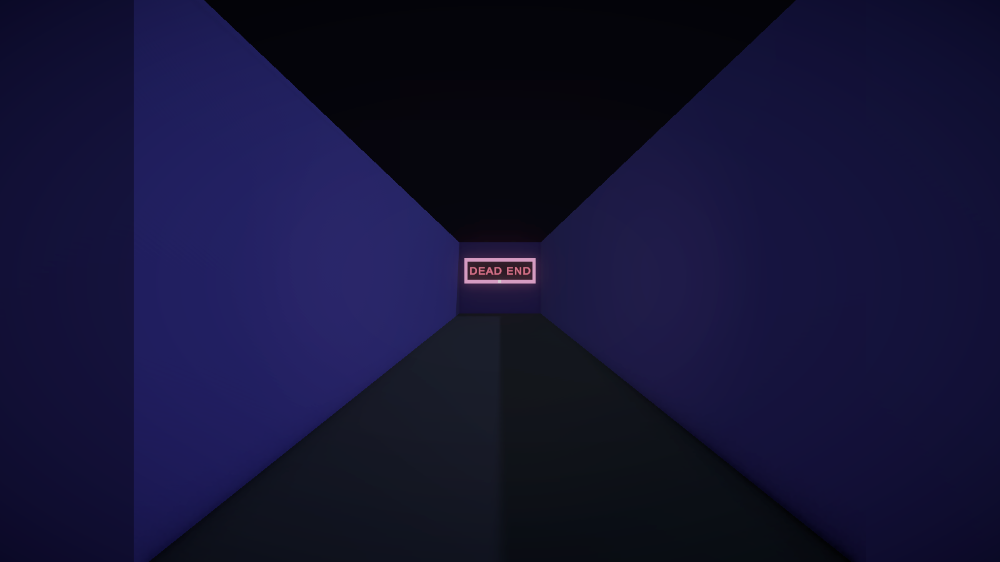
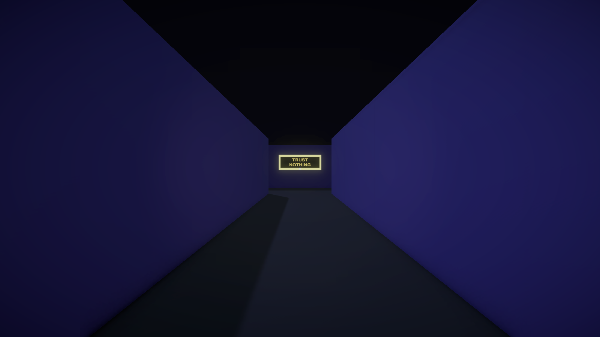
We went for a dark neon look. Everything is made from Unity's basic cubes with flat colours: dark blue walls, an almost black floor and dark fog. Anything the player needs to notice glows, like the green start pad, the signs and the cyan portal. The moving walls are purple so that players who pay attention can tell them apart from normal walls. There is also a flashlight on the camera, which limits how far you can see and adds to the tension.
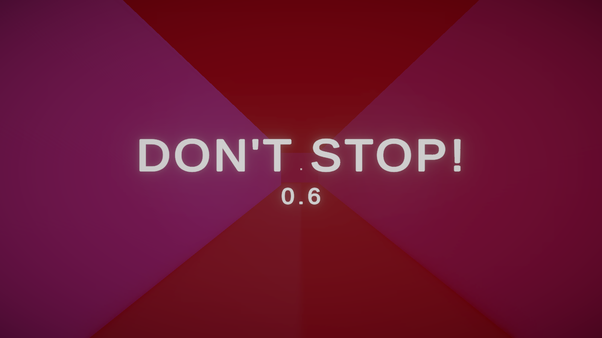
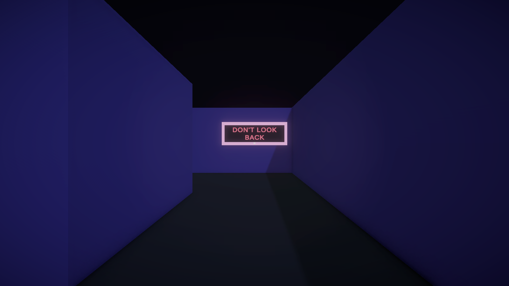
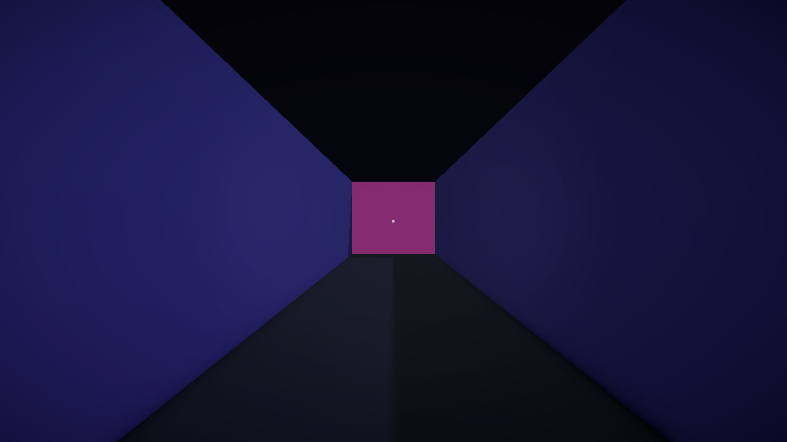
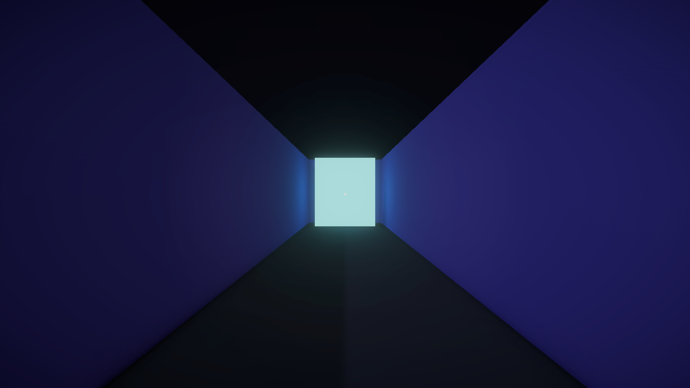
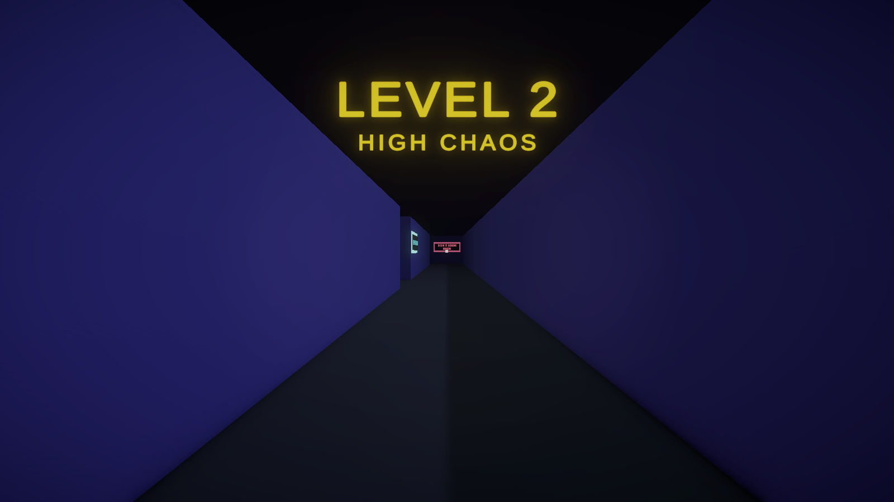
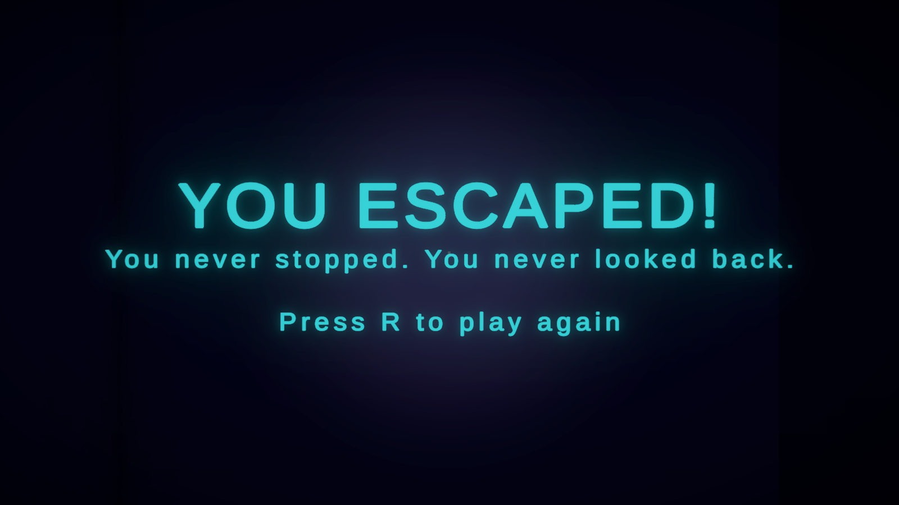
| What happens | What the player sees |
|---|---|
| Standing still | The screen turns red with "DON'T STOP!" and a countdown |
| Teleported | "TOO SLOW! BACK TO START" and they appear on the green start pad |
| Wall moves | Nothing at the time, since it is always behind you. You only find out when you turn around. We want to add a sound for this. |
| Level starts or ends | A large title in the middle of the screen |
The feelings we are mainly going for are sensation (urgency) and challenge, with a bit of fantasy from the idea of being hunted by a maze that is alive. The table shows three chains from mechanic to dynamic to aesthetic. More detail is in the separate MDA document.
| Mechanic | Dynamic | Aesthetic | |
|---|---|---|---|
| 1 | Moving slower than 0.1 for 2 seconds sends you back to the start, with a countdown warning. | Players don't stop at junctions and choose quickly. Some wiggle on the spot to buy time, which doesn't work. | Urgency and stress (sensation, challenge) |
| 2 | A wall is armed once you have seen it, and moves when it is more than 110 degrees behind you. | Players avoid turning around, glance back nervously and stare at walls so they can't move. | Paranoia (sensation, fantasy) |
| 3 | Dead ends and one-way gates, plus the reset when you stand still (which also resets every wall). | When trapped, players learn to stand still on purpose to get out. | Tension and then relief (challenge, discovery) |
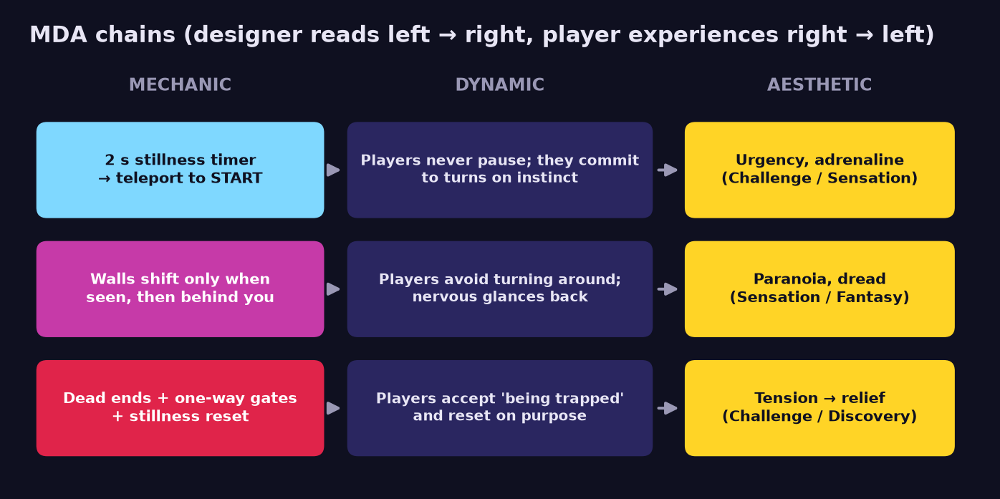
The chains depend on each other. Because you can't stop (1), you can't keep an eye on the walls behind you, which is why the moving walls are dangerous (2). The walls closing behind you create real dead ends (3). And the way out of a dead end is the stillness rule from (1), so the same rule punishes you for hesitating and saves you when you're stuck.
The dynamics in the table are what we expect players to do. We still need to confirm them with the external playtest. Chain 2 has already changed once, because in early testing the walls felt random rather than scary (see section 10).
| Principle | How we used it |
|---|---|
| Teaching through level design | Level 1 has one path and each sign is right before the thing it explains. Level 2 only uses rules the player already knows. |
| Feedback | The red overlay shows a countdown, every teleport shows a message and important things glow. |
| Signifiers | Moving walls are purple and normal walls are dark blue. The glowing portal shows where to go. |
| Difficulty curve | Level 1 has 2 gates and no branches. Level 2 has 5 gates, 2 toggle walls that reset three times faster, 4 dead ends and a trick corridor. |
| Risk and reward | The shortcut in Level 2 saves time but can close behind you. |
| Fairness | The walls always follow the same rule and reset when you are teleported, and the exit can always be reached. |
We used Unity 6 (6000.4.0f1) with URP, the new Input System and TextMeshPro. The game runs on three main scripts. The player and the walls both talk to the GameManager, but the GameManager doesn't depend on them.
| Script | What it does |
|---|---|
| FirstPersonController | Movement with a CharacterController, mouse look, the 2 second stillness timer, teleporting back to the start and detecting the portal. |
| DynamicMazeWall | Every frame it checks if the wall is on camera and not blocked (using a Physics.Linecast), whether it is behind the player, and the cooldown and distance. When it moves it turns the wall's renderer and collider on or off. |
| GameManager | Keeps track of the start point, shows the warning overlay and messages, resets the walls after a teleport, loads the next level and shows the victory screen. |
| SprintOrShiftLevelBuilder (editor only) | Builds both levels from the text layouts, including walls, signs, the player, UI and lighting. |
We first tried Unity's OnBecameInvisible() to detect when the player wasn't looking at a wall, but it also counts the Scene view camera in the editor, stops working once the wall's renderer is turned off, and doesn't know if something is in the way. Checking the player's camera ourselves turned out to be much more reliable.
Both scenes have the same hierarchy: Directional Light, Global Volume, GameManager, Environment (floor and start point), Maze (walls, dynamic walls and signs), Player with the camera and flashlight, UI (crosshair, overlay, messages and victory panel) and the FinishPortal.
We played both levels in the editor ourselves, and Adel also got his brother, who hadn't seen the game before, to play it on his laptop.
| Problem | What we changed |
|---|---|
| The pink debug boxes at the dead ends in Level 2 were always visible. | They were editor gizmos showing in the game view. Now they only show when a wall is selected in the editor. |
| The mouse was too slow. | Sensitivity went from 0.12 to 0.45 and smoothing from 20 to 30. |
| Adel's brother found that walls were closing even when they weren't in his line of sight, so they seemed random. | Walls now need a clear line of sight and have to be behind the player before they move, and they all start open. This was the most important fix, because before it the walls were confusing instead of scary. |
After fixing these we tested each rule in play mode: the stillness teleport, gates closing behind you, walls resetting after a teleport, hidden walls not counting as seen, turning 90 degrees not triggering a wall while turning fully around does, and the portal loading Level 2. We also confirmed both mazes can be finished.
We haven't done this yet. The plan is to have 3 to 5 people who haven't played before try it for about 10 minutes each, only telling them the controls. We will count how often they pause at junctions, turn around and use the reset on purpose, then ask them five short questions. The full plan is in the Playtesting Notes document.
| Feature | Status |
|---|---|
| First-person movement and mouse look | Done |
| Rule 1: 2 second stillness teleport with warning | Done |
| Rule 2: walls that move when seen and behind you (gates and toggle walls) | Done |
| Rule 3: dead ends and wall reset | Done |
| Two levels, portal, level transitions and victory screen | Done |
| Glowing signs, bloom, fog and flashlight | Done |
| macOS build | Done |
| Sound and music | Planned |
| Main menu and pause menu with a sensitivity slider | Planned |
| Warning effect when a wall is about to move | Planned |
| Timer and best times | Planned |
| Level 3 with a 1.5 second limit | Planned |
| Controller support and Windows build | Planned |
The game uses Unity 6, URP, the Input System and TextMeshPro by Unity Technologies. The font is Liberation Sans, which comes with TextMeshPro under the SIL Open Font License 1.1. We didn't use any outside art or sound; everything is built from Unity cubes with our own materials, and the diagrams were made in Python with matplotlib.
The scripts were written for this project with help from Claude Code, an AI coding assistant by Anthropic. More detail is in the Team Contributions and Credits documents.
Reference: Hunicke, R., LeBlanc, M. and Zubek, R. (2004) 'MDA: A Formal Approach to Game Design and Game Research'. The idea of things moving only when you aren't looking was inspired by the game Red Light, Green Light and the Weeping Angels from Doctor Who.
Repository: https://github.com/adel-nabih/SprintOrShift